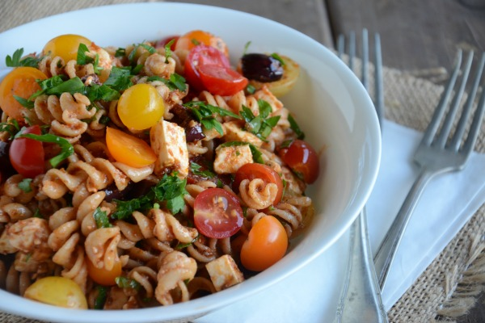

CURRY PASTA RECIPE
Pasta cooked with tomatoes, onions, cream and milk with the flavors of meat masala to make a curry pasta.
| Ingredients |
| Quantity |
Ingredient |
Instruction |
| 1 tbsp |
Oil |
|
| 2 tbsn |
Garlic |
Crushed |
| 1/2 cup |
Onions |
Chopped |
| 2 Cups |
Tomato Puree |
|
| to taste |
Salt |
|
| 2 tsp |
Sugar |
|
| 2 tbsp |
Cream |
|
| 1/2 cup |
Milk |
|
|
INSTRUCTIONS
- In a pan add oil and crushed garlic.
- Add chopped onions. Saute till light golden.
- Add the tomato puree, meat masala, salt and sugar. Cook till the puree starts to leave sides.
- Add cream and milk. Mix till smooth. Add boiled pasta.
- Serve hot.